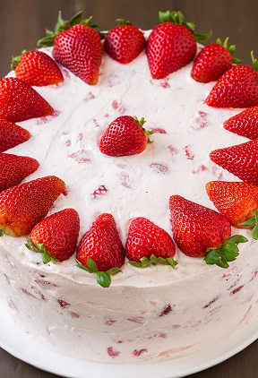
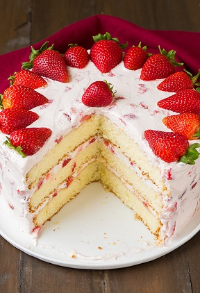
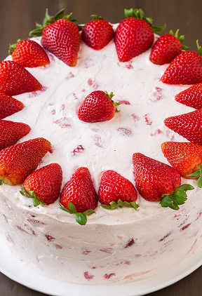
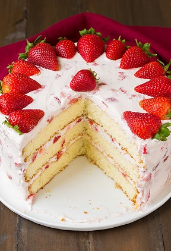

FRESH STRAWBERRY CAKE
Back home
Dessert pictures
 



Ingredients
Cake
- 3 cups (370g) cake flour
- 1 Tbsp baking powder
- 1/2 tsp salt
- 1 cup (8 oz) unsalted butter, softened
- 1 3/4 cup (390g) granulated sugar
- 3 large eggs
- 2 large egg yolks
- 1 1/4 cups milk (anything but skim)
- 2 tsp vanilla extract
Strawberry Cream Cheese Whipped Cream
- 3 cups heavy cream
- 1 cup (125g) powdered sugar, divided
- 8 oz cream cheese, left at room temperature until partially softened (about 20 - 30 minutes)
- 1/2 tsp vanilla extract
- 1 1/2 lbs strawberries, hulled and sliced into pieces slightly under 1/2-inch
- Sliced strawberries for decorating (optional)
Directions
Cake
- Preheat oven to 350 degrees. Butter 3 9-inch round cake pans then line bottom with a round of parchment, butter parchment and lightly dust pan with flour, shake out excess. Set pans aside.
- Sift cake flour into a medium mixing bowl. Add baking powder and salt and whisk 20 seconds, set aside.
- In the bowl of an electric stand mixer fitted with the paddle attachment (if you don't have a paddle that constantly scrapes bowl while mixing then stop mixer occasionally throughout entire mixing process and scrape down sides and bottom of bowl to ensure even mixing), whip together butter and sugar until pale and fluffy. Mix in eggs and egg yolks one a time adding in vanilla with last egg yolk. Add 1/3 of the flour mixture at a time (to the butter/egg mixture) alternating with 1/2 of the milk and mixing on low speed just until combined after each addition. Scrape down sides and bottom of bowl and gently fold batter several times.
- Divide batter among prepared baking pans. Bake in preheated oven 25 - 30 minutes until toothpick inserted into center of cake comes out clean. Cool in pan about 5 minutes, run knife around edges of cake to ensure they are loosened then invert onto wire racks to cool completely (I recommend transferring them to gallon size resealable bags after about 25 minutes of cooling so they don't dry and let them finish cooling in the bag).
- Once cool frost with Strawberry Cream Cheese Whipped Cream. Store cake in an airtight container in refrigerator.
Topping
- In the bowl of an electric stand mixer fitted with the whisk attachment, whip heavy cream until soft peaks form (occasionally scrap down sides and bottom of bowl to ensure even mixing), add 1/3 cup powdered sugar and whip until stiff peaks form (make sure they are stiff or your topping will be runny, it should get to the point where it doesn't have a wet sheen). Scrape cream out into a separate bowl.
- Add cream cheese to bowl of stand mixer, fit with paddle attachment and whip cream cheese until smooth and fluffy, mix in remaining 2/3 cup powdered sugar and vanilla (I've made this cake twice and the second time I added a few drops of liquid red food coloring at this point for a better pink, that pictured was without). Add strawberries and mix until uniform in color. Remove bowl from stand mixer, add whipped cream and fold into mixture. Frost over cooled cake.